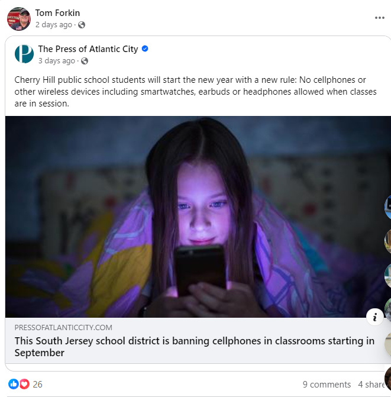
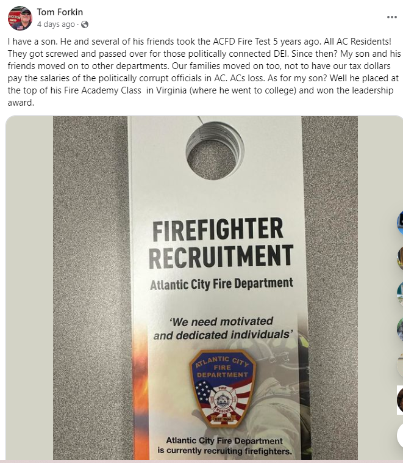
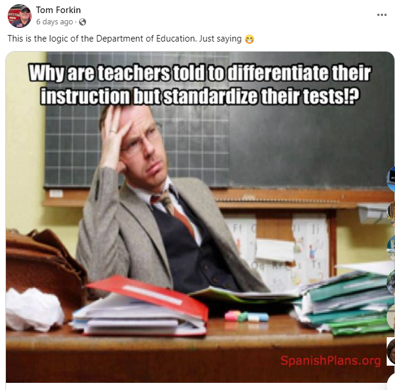
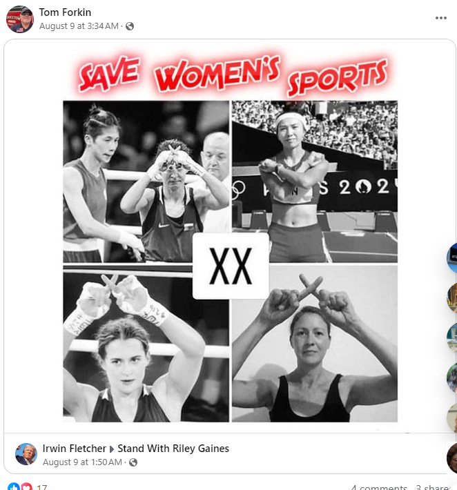
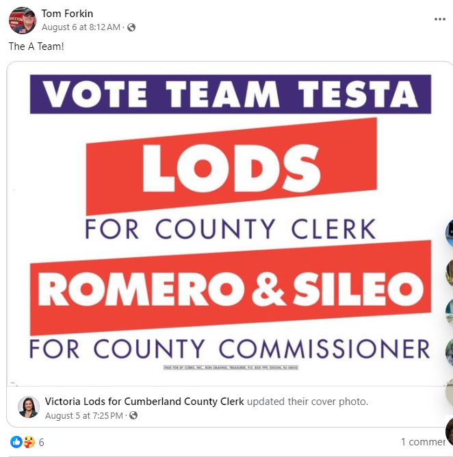

Thomas J. Forkin
Running for:
Commercial Township School Board
Incumbent
Challenger

individual agenda
Agenda taken from direct communication with Mr. Forkin
- Establish prudent line item analysis on spending
- Scaffold continuing educational development pursuant with State and Core Curriculum
- Continue to try to educate the other board members and the public on the pertinent legal issues and methods for saving resources for the taxpayers
Agenda gleaned from Facebook
- Opposes Drag Queen Reading Hour Facebook Post
- Supports banning of cellphones in classrooms
View Screenshot
If on desktop, right click the image and select 'open in new tab' for a larger image
 - Opposes DEI
View Screenshot
If on desktop, right click the image and select 'open in new tab' for a larger image
 - General dislike of the Department of Education
View Screenshot
If on desktop, right click the image and select 'open in new tab' for a larger image
 - Supports fairness in women's sports
View Screenshot
If on desktop, right click the image and select 'open in new tab' for a larger image
 - Supports local Republicans
View Screenshot
If on desktop, right click the image and select 'open in new tab' for a larger image

Partial Voting Record
- Voted against a school tax increase because "it was unneeded with ample funds in reserve."
- Voted against the sale of Historic Port Norris school without deed restrictions or a reverter clause
experience
- Attorney/Educator
- Present township board member
- Professor of Law at ACIT and Stockton
- Volunteer Fireman in Mauricetown
- Former Assistant City Solicitor for Atlantic City
- Former Police Legal Advisor for Atlantic City
- Former Asst. City Attorney for Atlantic City
- Former Arts Commissioner for Atlantic City
- Former Alcohol Beverage Control Board Chairman For Atlantic City
- Navy Veteran
- Small business owner